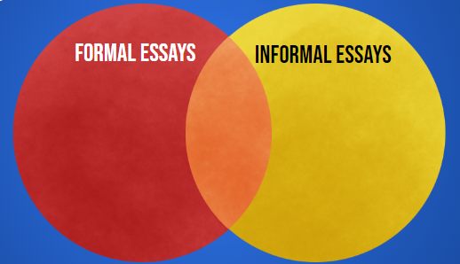

|
The Informal Essay Accordion Select each item to learn more.
Author’s viewpoint
Subject/Content (sources of evidence)
Tone & Diction
Structure
Location of Thesis
|
|
The Formal Essay
Accordion Select each item to learn more.
Author’s viewpoint
Subject/Content (sources of evidence)
Tone & Diction
Structure
Location of Thesis
|
Callout
Create a Venn diagram that shows the difference between informal and formal essays.

Type 2 examples of formal and informal essay topics.
1.
2.